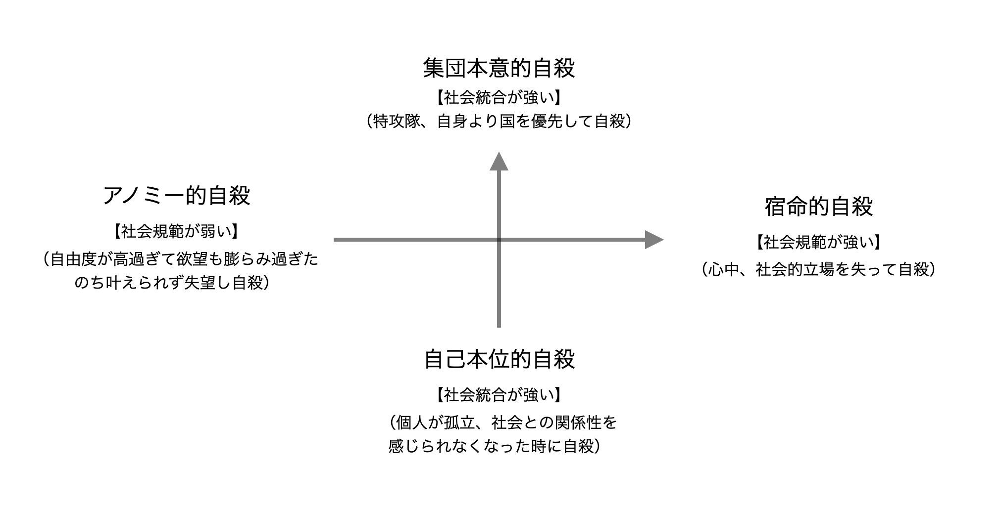

月報
４月の月報です。第一回目の月報です。
最近の目標は、
・HTML /CSSのブログを完成させること。
・貯金。
・NETFLIXでの映画鑑賞→嫌がらずに英語に触れる。
・規則正しい生活を送る。でした。
HTML/CSSに関しては、Progateで進めていくよりも自分で調べながらコードを書く方がハマって進捗が良かったです。ただ、今は「月刊湿地帯」の丸パクリ状態なので、コードを書くにしてもなぞるように作ったようなものです。楽だったので、楽しいと勘違いしただけかもしれません。
そうは言っても、ファームで作業中でも「今日はこれを進めよう。ここはこんな構成にしたい。」と考えるほどだったので相当ハマってたようです。（この夢中になる感覚は続けていきたい。感覚を自分でコントロールするのは難しいけど。）
貯金に関しては相変わらず無理をせずとも貯金ができてしまうという…。あぁ才能が恐ろしい。なんちゃって。
ただ先月に関しては、これからシドニー/ケアンズ/日本/メルボルンに旅行に行くこと、その後にはゴールドコーストでバイトが決まるまでは収入がない事を考えながら買い物をしていました。
NETFLIXで映画を見る事は週末の習慣になっていましたが、ブログ作成を始めてからはコーディングを優先してしまって、あまり見れていなかったです。
ただ今月の個人的なビックニュースは、Disney＋に加入したことです。
これはデカい。MCU作品がスパイダーマン以外は総おさらい出来る。ワンダヴィジョンやロキ等スピンオフも見れる。スターウォーズも見れる。もちろん他のディズニー作品も見れる。
日本にいたらやっていないであろう原語版(英語)＋英語字幕。意外と理解できる。
もちろん映像を見ながらだし元々ストーリーを知っている作品を見たりしてるので、理解しやすい状況というのもあるけれども。
そもそもこれが英語学習として意味があるかは少し疑問なところではあるけども(?)、俳優の演技を言語も含めて楽しむ、吹き替えには無い英語のニュアンスでのやり取りを楽しむという意味でも続けたいと思います。
規則正しい生活はしっかりできていました。ご飯は３食、起床時間/就寝時間もさほどばらつきが無い、ファーム → 腕立て伏せ → シャワー → 晩御飯 → コーディングの習慣ができていました。生活リズムからのストレスが減った気がする。
来月の目標は、
・シドニーで５人とインスタ交換。
・JavaScriptをブログに組み込む＋Githabを使えるようにする。
・日本での食事、友人に会う等日本での生活をしっかり楽しむ。
・ゴールドコーストの飲食店をリストアップ(50件)。
・RSA(QLD)について調べる。取得できるなら取得。です。
…長期の目標も立てておいた方がいいな。あと数字を使って具体的にしていきたい。でもギチギチに縛っていくのも苦しいし。やりたいことへ数字を使っていくのはいいんだけど…。こんな個人で書いているとこぐらい自分が能動的なことだけにしよう。そうしよう。
「自由記述」
はい、ということで、もう５月ですね。去年の今頃はセブで「同居人のイビキ/空調主導権争い」「相変わらず伸びない英語（自分がやってないだけなのも知ってる状態）」「食事」に苦しめられてたなぁ。
終わってみたら早いものです。全部に共通して言えるかも。
今は共同生活に苦しんでいます。PoomやPimjaii、マナさんがいなくなってからは、職場にも家にも気心の知れた人がいない状態です。これって結構しんどいもので、週に数回誰かに電話をしながら耐えているここ数週間。
何がしんどいか。自分の気持ちを出せる場所が無い＝孤独感でしんどさを感じるようです。少し前に見たデゥルケームの四種類の自殺
集団本意的自殺
宿命的自殺
自己本位的自殺
アノミー的自殺
の内、自己本位的自殺のしんどさですね。
（※社会統合：個人と社会の結び付き、社会規範：ルール）
なんで自殺なんって思うよね…。辛さに弱い自分が今どんなカテゴリーの辛さを感じていて、それにどう対処できるかを知っておこうと思ったので。この動画にたどり着いたのもオーストラリアに来て色んな国の人と触れ合ったことがきっかけなんです。
なぜ戦争が始まると自殺は減るのか【人が自殺する理由を戦争から考えてみる】
でもかじっただけなので中途半端に載せるべきではないかも知れませんね。m(._.)m
この記事を書いている現在は仕事も残り３日、退去まで５日です。あと少し、あと何日と思いながら過ごす毎日は長いですね。
でもやっと終わりが見えてきました。この嫌なシェアハウス生活も。ファームジョブ期間も。ワーキングホリデー1年目も。
良い体験悪い体験あるけど全て捉え方一つで変わるもの。
感謝を忘れずに過ごしたいと思います。では。